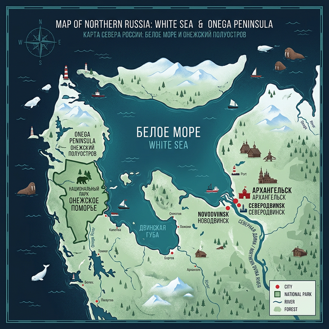

Прогулка по Онежскому Поморью
Национальный парк сохраняет уникальную первозданную природу Белого моря — густые таежные леса, бескрайние песчаные косы и традиционные рыбацкие тони.


Национальный парк «Онежское Поморье» объединяет морскую и таёжную природу. Но даже здесь, где медведя встретить легче, чем человека, берега Белого моря страдают от мусора.
Узнать большеПроект создан в рамках межрегионального конкурса «Арктический Хакатон 2026». Наша цель — повысить осведомленность жителей региона и школьников Архангельской области о проблеме антропогенного загрязнения Белого моря.
Белое море — самое маленькое в Северном ледовитом океане. Сюда мусор приносят реки, в частности крупнейшая река Северная Двина, собирающая отходы от деревень и агломерации «Архангельск — Новодвинск — Северодвинск».
«На его берегу, где можно чаще встретить медведя, чем человека, с каждым годом становится всё больше мусора.»

Национальный парк сохраняет уникальную первозданную природу Белого моря — густые таежные леса, бескрайние песчаные косы и традиционные рыбацкие тони.
Исследование морфологического состава мусора на побережье Белого моря
Материал: ПЭТ (Полиэтилентерефталат)
Вероятная причина: Выброшены на берег отдыхающими или принесены рекой Северная Двина из населенных пунктов.
Материал: Нейлон, капрон
Вероятная причина: Утеряны рыбаками во время промысла. Представляют особую опасность как «сети-призраки» для морских млекопитающих.
Материал: Резина, полиуретан
Вероятная причина: Были оставлены на берегу во время купания или смыты приливом с берега рыбацких поселков.
Материал: Пластик, латекс, микросхемы
Вероятная причина: Был запущен в атмосферу для исследований, после чего упал и попал в море в виде остаточного мусора.
Материал: Вспененный полистирол (EPS)
Вероятная причина: Использовался рыбаками для разметки снастей. При разрушении распадается на тысячи гранул микропластика, которые поглощают морские организмы.
Материал: Полиэтилен высокой плотности (HDPE)
Вероятная причина: По всей видимости, оставлена рыбаками или туристами и смыта в море во время прилива. Остатки топлива внутри загрязняют воду и береговую линию.
Управляй субмариной, собирай мусор крюком и спасай Белое море от загрязнения! Избегай опасных глубин и мусорных вихрей.